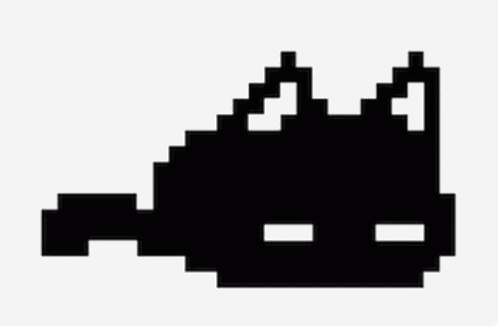
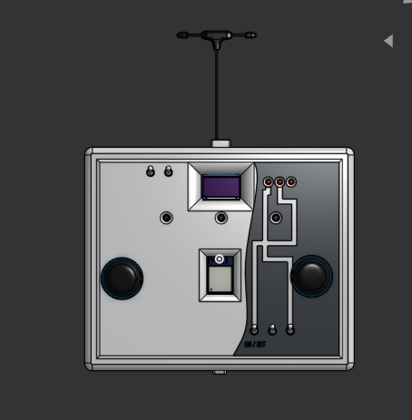
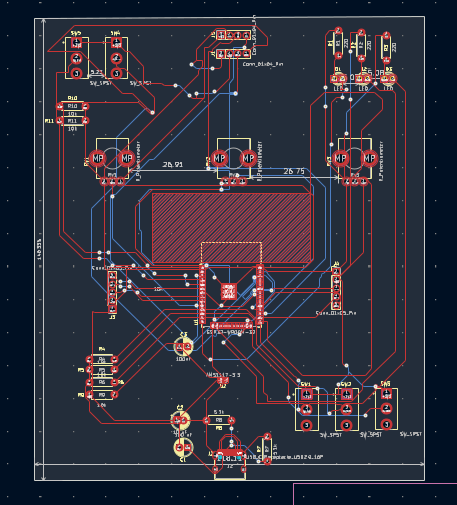
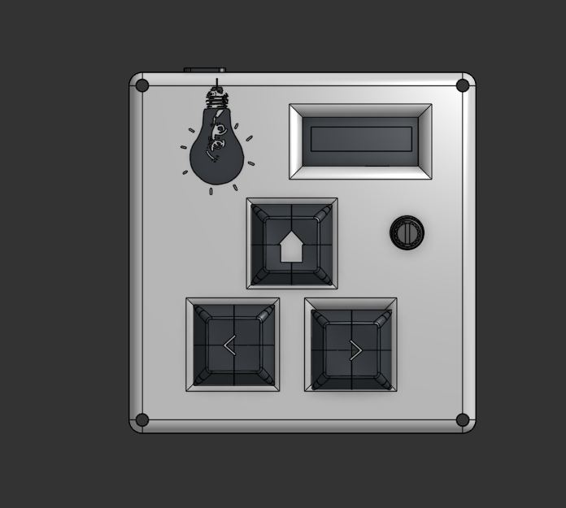
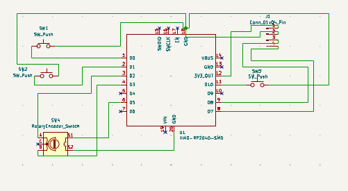

16 Years old as of 2026.
Im from Germany and I love building aerospace projects from
custom electronics to hardware I design myself. My dream is to
one day work as an Aerospace Engineer at ESA / Rolls Royce / Lockheed Martin. Outside of
building things, I play the violin, im really intressted in Chemiestry and im currently learning
French.
Building aerospace related projects is my biggest passion. My dream is to work at the ESA / Rolls Royce one day.
I play the violin in my free time. Im very bad with my left hand so i cant really play anything good.
Currently learning French and i can speak German aswell as English.
Learning 3D modeling in Onshape to design cases and parts.
My favorite game is Omori, i think you could tell. I also play alot of Rocket League, Terraria, Juno and more.
When im at the School of Higher education i want to go to ESTEC Netherlands, Rolls Royce England and Airbus France with Erasmus+
Ive been intressted in Moutains for a long time now even tho i know i will never climb one, im way to unfit for that extrem but it still is interesting to me
A custom macropad with an OLED display, buttons and a rotary encoder, built for Hack Club's Stardance mission.
A self built controller for a future satellite drone project. Its only digital as of right now tho, im still waiting for funding.
A custom built safe which can only be opened when 2 potentiometers are at the right angle
Made as a school project.
An automated sorting system sorted blocks by color
Built as a school project.
A self built CNC machine which could write different letters, i made code for the letters "B,E,L,O,N,F,T,U,H"
Made as a school project.
I Built a small rocket with KNO3 + Sugar but build it without a parachute i it just crashed in the ground
I made a working speaker with a magnet and a small copper coil. It worked but it was really silent
This is my first website without a fully using ai. I always thought making websites would be useless since ai can make you one in seconds. But Html is really fun and not that hard making websites really isnt as bad as i was told.
Ive always wanted to build things; Ive loved electronics ever since I was young. Although I was interested, I never thought I would be able to create things on my own. As time went on, I started reflecting on my future and what path I wanted to pursue. I initially tried learning Python, but found it boring and began to think this field wasnt for me. Everything changed at school when we had a hands-on building project. Even though i found the idea a hassle, I was so excited when we started, and it turned out I was really good at it felt amazing. I ended up being the best in the class and even helped all the other groups with their projects. Having those ideas and the drive to bring them to life made me realize this is what I was meant to do.
My first Hackclub Project The Hackpad. It was really fun to create, the tutorial was very easy to understand only the QMK Firmware was abit difficult to make work of. I used 3 push buttons, 1 OLED Screen and 1 Rotary Encoder.
It was approved really fast (Shoutout to the Goat Tech Genius Penda) and since i had a simple design it didn't take long to build.


I wanted to build a drone and with hackclub that would be possible but i relised i dont have a Controller for it and so i made that first it was really a side project. It was really fun creating it and picking out parts, although i really dont like the design too much it alrigth i would say. The build includes 5 toggle switches, 3 LEDs, 3 Potentiometers, 1 RP1 radiomodule, 2 Joysticks and 1 OLED screen

